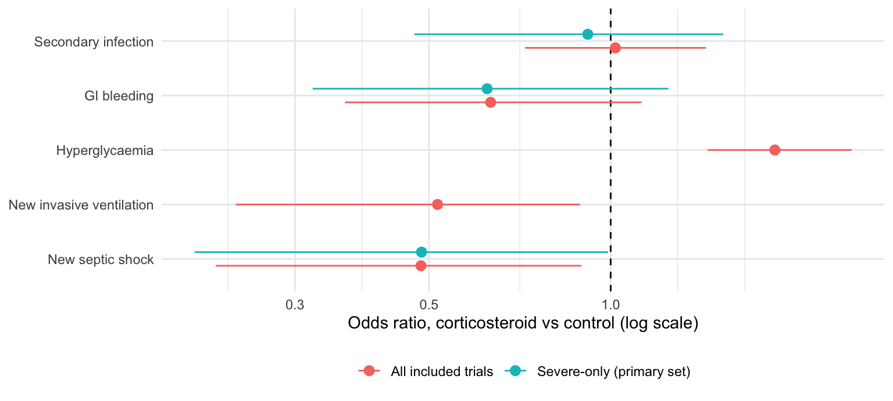

Code
library(targets)
library(dplyr)
library(ggplot2)
library(knitr)Every secondary-outcome row was checked against the source PDFs by a second extractor on 10 November 2026 (worklist verification_worklist_secondary_2026-11-10.xlsx; the check and the decisions it led to are in the decision log, Status.md). Of 40 trial-by-outcome rows, 35 enter the pooled fits, 3 are descriptive only (one arm not reported) and 2 are excluded. Open items: (1) for Confalonieri 2005, new septic shock, the denominators are 23/23 as reported, kept for simplicity; patients with septic shock at entry cannot develop new shock, and Tables 1 and 2 imply 21 patients at risk in each arm (Table 1: 2 hydrocortisone and 1 placebo patient in shock at entry; Table 2 prints 9 (43%) in the placebo group), but the fit with 21/21 gives the same pooled result (OR 0.53) (the row is flagged denominator_as_reported); (2) the window is not stated for seven rows (flagged window_unstated); (3) Torres 2015 is included in all five outcomes using its supplement (obtained 10 November 2026): combined 0 to 120 h counts for new ventilation (5/61 vs 9/59) and new septic shock (2/61 vs 7/59) from eFigure 1, and both arms for GI bleeding and super-infection from eTable 8. Its denominators are the intention-to-treat numbers as reported; for septic shock the at-risk denominators would be 51 and 41 (eTable 3), which gives the same result (OR 0.47 against 0.48 in all trials). The analysis is a draft and the secondary outcomes do not override the mortality conclusion.
The protocol (PROSPERO field 25) lists secondary outcomes to be summarised descriptively and, where the data allow, with the same Bayesian framework, without overriding the mortality conclusion. Following the approved plan (SECONDARY_OUTCOMES_PLAN.md, rules R1–R7):
For harms, the probability that corticosteroids increase the event, P(OR > 1), is the quantity of interest; for new ventilation and new septic shock, P(OR < 1) is.
ss |>
mutate(ord = match(outcome, names(sec_outcome_label))) |>
arrange(ord, set != "all", variant != "main") |>
transmute(Outcome = sec_outcome_label[outcome],
Analysis = paste0(ifelse(set == "all", "All included", "Severe-only"),
case_when(variant == "no_long" ~ ", long windows dropped",
variant == "treated" ~ ", treated definition only", TRUE ~ "")),
Trials = n_trials,
`Events, steroid` = sprintf("%d/%d", events_s, n_s), `Events, control` = sprintf("%d/%d", events_c, n_c),
`OR (95% CrI)` = or_ci(OR_median, OR_q025, OR_q975),
`P(OR>1)` = pr(P_OR_gt_1), `P(OR<1)` = pr(P_OR_lt_1), `tau median` = pr(tau_median),
`Predictive OR, new trial` = or_ci(ORnew_median, ORnew_q025, ORnew_q975)) |>
kable(caption = "Secondary outcomes, reference prior N(0, 1). Rows checked by a second extractor (10 November 2026); draft analysis. OR < 1 favours corticosteroids (fewer events).")| Outcome | Analysis | Trials | Events, steroid | Events, control | OR (95% CrI) | P(OR>1) | P(OR<1) | tau median | Predictive OR, new trial |
|---|---|---|---|---|---|---|---|---|---|
| Secondary infection | All included | 8 | 188/1512 | 184/1510 | 1.02 (0.72–1.44) | 0.55 | 0.45 | 0.17 | 1.02 (0.51–2.00) |
| Secondary infection | All included, long windows dropped | 7 | 87/1229 | 90/1231 | 0.98 (0.64–1.56) | 0.46 | 0.54 | 0.23 | 0.98 (0.40–2.44) |
| Secondary infection | Severe-only | 4 | 141/767 | 142/756 | 0.92 (0.47–1.54) | 0.35 | 0.65 | 0.27 | 0.92 (0.27–2.52) |
| Secondary infection | Severe-only, long windows dropped | 3 | 40/484 | 48/477 | 0.77 (0.30–1.68) | 0.23 | 0.77 | 0.36 | 0.76 (0.17–2.89) |
| GI bleeding | All included | 7 | 29/1317 | 44/1268 | 0.63 (0.36–1.12) | 0.05 | 0.95 | 0.20 | 0.63 (0.28–1.50) |
| GI bleeding | Severe-only | 4 | 22/767 | 35/756 | 0.62 (0.32–1.25) | 0.08 | 0.92 | 0.24 | 0.63 (0.23–1.83) |
| Hyperglycaemia | All included | 10 | 708/1789 | 547/1738 | 1.87 (1.45–2.51) | 1.00 | 0.00 | 0.15 | 1.87 (1.04–3.40) |
| Hyperglycaemia | All included, treated definition only | 4 | 319/1047 | 227/1050 | 1.77 (1.15–2.61) | 0.99 | 0.01 | 0.16 | 1.76 (0.80–3.69) |
| New invasive ventilation | All included | 5 | 66/820 | 104/818 | 0.52 (0.24–0.89) | 0.01 | 0.99 | 0.29 | 0.53 (0.15–1.41) |
| New invasive ventilation | All included, long windows dropped | 4 | 66/784 | 104/784 | 0.52 (0.24–0.89) | 0.01 | 0.99 | 0.29 | 0.53 (0.15–1.47) |
| New septic shock | All included | 5 | 71/740 | 116/719 | 0.48 (0.22–0.89) | 0.01 | 0.99 | 0.52 | 0.49 (0.10–2.00) |
| New septic shock | Severe-only | 4 | 70/717 | 114/697 | 0.49 (0.20–0.99) | 0.02 | 0.98 | 0.54 | 0.49 (0.09–2.22) |
ggplot(mutate(main, Outcome = factor(sec_outcome_label[outcome], rev(sec_outcome_label)),
Analysis = ifelse(set == "all", "All included trials", "Severe-only (primary set)")),
aes(OR_median, Outcome, xmin = OR_q025, xmax = OR_q975, colour = Analysis)) +
geom_vline(xintercept = 1, linetype = 2) +
geom_pointrange(position = position_dodge(width = 0.5)) +
scale_x_log10() +
labs(x = "Odds ratio, corticosteroid vs control (log scale)", y = NULL, colour = NULL) +
theme_minimal() +
theme(legend.position = "bottom")
All 12 secondary-outcome fits pass the acceptance rules used for mortality (R-hat below 1.01, bulk and tail ESS above 400, no divergences). The largest R-hat is 1.002 and the smallest bulk ESS 2106.
Points to keep in mind when reading these results:
sec |>
filter(fit_all == 1) |>
mutate(ord = match(outcome, names(sec_outcome_label)),
raw_or = ((r1 + 0.5) / (n1 - r1 + 0.5)) / ((r0 + 0.5) / (n0 - r0 + 0.5))) |>
arrange(ord, final_set, study_label) |>
transmute(Outcome = sec_outcome_label[outcome], Trial = study_label, Set = final_set, Timepoint = timepoint,
Definition = definition, Steroid = sprintf("%d/%d", r1, n1), Control = sprintf("%d/%d", r0, n0),
`Raw OR (0.5 added, display only)` = pr(raw_or), `Severe-only fit` = ifelse(fit_severe == 1, "yes", ""),
Flags = coalesce(sensitivity_flags, "")) |>
kable(caption = "Rows entering the pooled fits (from analysis_secondary.csv). The raw OR adds 0.5 to every cell for display only; the model uses the exact counts.")| Outcome | Trial | Set | Timepoint | Definition | Steroid | Control | Raw OR (0.5 added, display only) | Severe-only fit | Flags |
|---|---|---|---|---|---|---|---|---|---|
| Secondary infection | Confalonieri 2005 | primary | end_of_study | as reported | 0/23 | 4/23 | 0.09 | yes | window_unstated |
| Secondary infection | Dequin 2023 (CAPE COD) | primary | d28 | as reported | 39/400 | 44/395 | 0.86 | yes | |
| Secondary infection | Heming 2024 (APROCCHSS) | primary | d180 | as reported | 101/283 | 94/279 | 1.09 | yes | long_window |
| Secondary infection | Torres 2015 | primary | in_hospital | as reported | 1/61 | 0/59 | 2.95 | yes | |
| Secondary infection | Blum 2015 (STEP) | sensitivity | d30 | as reported | 13/392 | 14/393 | 0.93 | ||
| Secondary infection | Meijvis 2011 (Ovidius) | sensitivity | in_hospital | as reported | 7/151 | 5/153 | 1.40 | window_unstated | |
| Secondary infection | Snijders 2010 | sensitivity | d30 | as reported | 10/104 | 4/109 | 2.60 | window_unstated | |
| Secondary infection | Tongyoo 2016 | sensitivity | d28 | as reported | 17/98 | 19/99 | 0.89 | ||
| GI bleeding | Confalonieri 2005 | primary | end_of_study | as reported | 1/23 | 1/23 | 1.00 | yes | window_unstated |
| GI bleeding | Dequin 2023 (CAPE COD) | primary | d28 | as reported | 9/400 | 13/395 | 0.69 | yes | |
| GI bleeding | Heming 2024 (APROCCHSS) | primary | d28 | as reported | 12/283 | 20/279 | 0.58 | yes | |
| GI bleeding | Torres 2015 | primary | in_hospital | as reported | 0/61 | 1/59 | 0.32 | yes | |
| GI bleeding | Blum 2015 (STEP) | sensitivity | d30 | as reported | 3/392 | 4/393 | 0.78 | ||
| GI bleeding | Nafae 2013 | sensitivity | d7 | as reported | 1/60 | 1/20 | 0.33 | window_unstated | |
| GI bleeding | Tongyoo 2016 | sensitivity | d28 | as reported | 3/98 | 4/99 | 0.78 | ||
| Hyperglycaemia | Dequin 2023 (CAPE COD) | primary | d7 | treated | 231/400 | 177/395 | 1.68 | ||
| Hyperglycaemia | Heming 2024 (APROCCHSS) | primary | d7 | any | 260/283 | 234/279 | 2.15 | definition_any | |
| Hyperglycaemia | Torres 2015 | primary | in_hospital | any | 11/61 | 7/59 | 1.59 | definition_any | |
| Hyperglycaemia | Blum 2015 (STEP) | sensitivity | in_hospital | treated | 76/392 | 43/393 | 1.95 | ||
| Hyperglycaemia | Hagman 2026 | sensitivity | in_hospital | any | 6/37 | 3/33 | 1.80 | definition_any;as_treated;window_combined | |
| Hyperglycaemia | Meijvis 2011 (Ovidius) | sensitivity | in_hospital | treated | 7/151 | 5/153 | 1.40 | ||
| Hyperglycaemia | Nafae 2013 | sensitivity | d7 | any | 19/60 | 8/20 | 0.69 | definition_any;window_unstated | |
| Hyperglycaemia | Snijders 2010 | sensitivity | in_hospital | treated | 5/104 | 2/109 | 2.38 | ||
| Hyperglycaemia | Tongyoo 2016 | sensitivity | d28 | any | 79/98 | 67/99 | 1.96 | definition_any | |
| Hyperglycaemia | Wittermans 2021 (Santeon-CAP) | sensitivity | in_hospital | any | 14/203 | 1/198 | 10.07 | definition_any;window_unstated | |
| New invasive ventilation | Dequin 2023 (CAPE COD) | primary | d28 | as reported | 60/308 | 86/310 | 0.63 | denominator_corrected | |
| New invasive ventilation | Torres 2015 | primary | 0-120h | as reported | 5/61 | 9/59 | 0.52 | denominator_as_reported | |
| New invasive ventilation | Blum 2015 (STEP) | sensitivity | d30 | as reported | 1/392 | 6/393 | 0.23 | ||
| New invasive ventilation | Fernández-Serrano 2011 | sensitivity | in_hospital | as reported | 0/23 | 3/22 | 0.12 | ||
| New invasive ventilation | Hagman 2026 | sensitivity | d56 | as reported | 0/36 | 0/34 | 0.95 | long_window | |
| New septic shock | Confalonieri 2005 | primary | d8 | as reported | 0/23 | 9/23 | 0.03 | yes | denominator_as_reported |
| New septic shock | Dequin 2023 (CAPE COD) | primary | d28 | as reported | 55/359 | 86/344 | 0.54 | yes | |
| New septic shock | Meduri 2022 (ESCAPe) | primary | in_hospital | as reported | 13/274 | 12/271 | 1.07 | yes | |
| New septic shock | Torres 2015 | primary | 0-120h | as reported | 2/61 | 7/59 | 0.29 | yes | denominator_as_reported |
| New septic shock | Fernández-Serrano 2011 | sensitivity | in_hospital | as reported | 1/23 | 2/22 | 0.55 |
sec |>
filter(fit_all == 0) |>
mutate(ord = match(outcome, names(sec_outcome_label))) |>
arrange(ord, study_label) |>
transmute(Outcome = sec_outcome_label[outcome], Trial = study_label, Status = status,
Steroid = ifelse(is.na(r1), "–", sprintf("%s/%s", r1, n1)),
Control = ifelse(is.na(r0), "not reported", sprintf("%s/%s", r0, n0)),
Reason = decision) |>
kable(caption = "Rows left out of the fits: descriptive only (one arm not reported) or excluded.")| Outcome | Trial | Status | Steroid | Control | Reason |
|---|---|---|---|---|---|
| Secondary infection | Mikami 2007 | descriptive | 0/15 | not reported | R2: control arm not reported |
| GI bleeding | Fernández-Serrano 2011 | descriptive | 1/23 | not reported | R2: control arm not reported |
| Hyperglycaemia | Fernández-Serrano 2011 | descriptive | 1/23 | not reported | R2: control arm not reported |
| New invasive ventilation | Nafae 2013 | excluded | 8/60 | 5/20 | Q2 (second-extractor check 10 Nov): the paper does not show newly ventilated patients (need for mechanical ventilation, mode and timing unclear); excluded under Q2 |
| New septic shock | Heming 2024 (APROCCHSS) | excluded | 55/283 | 55/279 | Q4: all patients were in septic shock at enrolment; the row counts new episodes |
The continuous secondary outcomes (hospital and ICU length of stay, ventilator-free days, ventilation duration, time to clinical stability) and the sparse binary outcomes (readmission, ICU admission, ARDS, delirium, neuromuscular weakness, serious adverse events, treatment failure) will be reported descriptively, as the plan specifies. That table is still to be added.